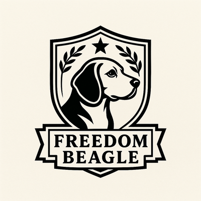

Investigative journalism — the deep-dig pieces. Where Freedom Beagle follows a story until there's nothing left to find.
On the Scent
There are more than 100,000 Flock Safety cameras bolted to poles across the United States right now — and the courts still can't agree on whether that counts as a search.